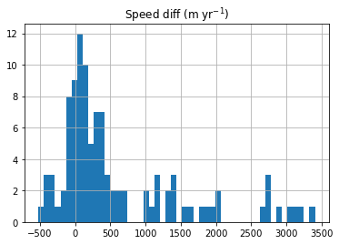
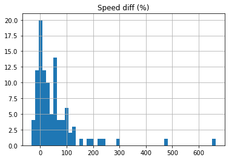

Figure 6
Contents
Figure 6¶
This notebook produces Figure 6 and other auxiliary figures.
import seaborn as sns
import pandas as pd
# import numpy as np
import matplotlib
# import matplotlib.pyplot as plt
from scipy import stats
Get data¶
We load the data produced by the previous workflow stored as ../data/results/pej0_GrIS_classification.csv. See Fig5.ipynb for more details.
df = pd.read_csv('../data/results/pej0_GrIS_classification.csv')
df
| $\frac{P_e}{\ell}$ (m$^{-1}$) | $J_0$ (m yr$^{-1}$) | Speed diff (m yr$^{-1}$) | Speed diff (%) | Advance (km) | |
|---|---|---|---|---|---|
| 0 | 0.000021 | -915.378881 | 3029.186179 | 66.610459 | -17.0 |
| 1 | 0.000306 | -200.805053 | 511.123464 | 84.192696 | -2.3 |
| 2 | -0.000047 | -82.857761 | 456.284207 | 55.293407 | -3.0 |
| 3 | -0.000034 | -450.936824 | -435.655180 | -12.603562 | -0.3 |
| 4 | 0.000078 | -1243.208582 | -349.572187 | -8.164585 | -0.2 |
| ... | ... | ... | ... | ... | ... |
| 99 | 0.000234 | -112.716518 | 613.747370 | 34.516832 | -0.9 |
| 100 | 0.000044 | -167.859915 | 1023.168837 | 55.202543 | -4.1 |
| 101 | 0.000054 | -1081.388452 | 2774.927415 | 51.468309 | -8.8 |
| 102 | 0.000315 | 5.479272 | 467.138448 | 31.283371 | -0.9 |
| 103 | 0.000231 | -222.535111 | 573.128198 | 41.697811 | -4.1 |
104 rows × 5 columns
This histogram gives a quick idea about the distribution of speed change:
df.hist(column='Speed diff (m yr$^{-1}$)', bins=50);

df.hist(column='Speed diff (%)', bins=50);

Visualization¶
We add a new column called Legend and classify the glaciers based on a simple threshold of speed change (here set to \(\pm\)300 m/yr):
newclass = []
count = 0
for idx, row in df.iterrows():
if row['Speed diff (m yr$^{-1}$)'] >= 300 or row['Speed diff (m yr$^{-1}$)'] <= -300:
newclass.append(r'$|\Delta V| \geq$ 300 m yr$^{-1}$')
count += 1
else:
newclass.append(r'$|\Delta V| <$ 300 m yr$^{-1}$')
df['Legend'] = newclass
print('How many glaciers have a higher speed change?: {}'.format(count))
print('How many glaciers have a lower speed change?: {}'.format(len(df) - count))
How many glaciers have a higher speed change?: 54
How many glaciers have a lower speed change?: 50
Finally, we plot Figure 6:
matplotlib.rc('font', size=20)
matplotlib.rc('axes', linewidth=2)
# fig, ax1 = plt.subplots(1, 1, figsize=(8, 8))
cmap = {r'$|\Delta V| \geq$ 300 m yr$^{-1}$': '#C94337', r'$|\Delta V| <$ 300 m yr$^{-1}$': '#8EB7E4'}
f = sns.jointplot(data=df, x=r'$\frac{P_e}{\ell}$ (m$^{-1}$)', y=r'$J_0$ (m yr$^{-1}$)', hue="Legend", palette=cmap,
joint_kws={"s": 70, }, marginal_kws={'linewidth': 2}, height=8)
f.ax_joint.set_xlim([-0.0003, 0.0010])
f.ax_joint.set_ylim([-2000, 700])
f.ax_joint.set_xticks([-0.0003, 0, 0.0003, 0.0006, 0.0009])
f.ax_joint.tick_params(width=2, length=5)
f.ax_marg_x.tick_params(width=2, length=5)
f.ax_marg_y.tick_params(width=2, length=5)
legend = f.ax_joint.legend(loc='lower right')
legend.get_frame().set_linewidth(2)
legend.get_frame().set_edgecolor('xkcd:gray')
f.savefig('../data/results/Fig6-1.pdf')

unstable_j0 = df[df['Legend'] == r'$|\Delta V| \geq$ 300 m yr$^{-1}$'][r'$J_0$ (m yr$^{-1}$)']
unstable_pe = df[df['Legend'] == r'$|\Delta V| \geq$ 300 m yr$^{-1}$'][r'$\frac{P_e}{\ell}$ (m$^{-1}$)']
stable_j0 = df[df['Legend'] == r'$|\Delta V| <$ 300 m yr$^{-1}$'][r'$J_0$ (m yr$^{-1}$)']
stable_pe = df[df['Legend'] == r'$|\Delta V| <$ 300 m yr$^{-1}$'][r'$\frac{P_e}{\ell}$ (m$^{-1}$)']
stats.kstest(unstable_j0, stable_j0)
KstestResult(statistic=0.3451851851851852, pvalue=0.0028360448053456055)
stats.kstest(unstable_pe, stable_pe)
KstestResult(statistic=0.3237037037037037, pvalue=0.006217578940975077)
U1, p = stats.mannwhitneyu(stable_j0, unstable_j0)
p
0.001338775306495195
df.plot(x='Speed diff (m yr$^{-1}$)', y='Advance (km)', kind='scatter')
<AxesSubplot:xlabel='Speed diff (m yr$^{-1}$)', ylabel='Advance (km)'>
df_1 = df.loc[df['Advance (km)'] < -0.5]
cmap = {r'$|\Delta V| \geq$ 300 m yr$^{-1}$': '#C94337', r'$|\Delta V| <$ 300 m yr$^{-1}$': '#8EB7E4'}
f = sns.jointplot(data=df_1, x=r'$\frac{P_e}{\ell}$ (m$^{-1}$)', y=r'$J_0$ (m yr$^{-1}$)', hue="Legend", palette=cmap,
joint_kws={"s": 70, }, marginal_kws={'linewidth': 2}, height=8)
f.ax_joint.set_xlim([-0.0003, 0.0010])
f.ax_joint.set_ylim([-2000, 700])
f.ax_joint.set_xticks([-0.0003, 0, 0.0003, 0.0006, 0.0009])
f.ax_joint.tick_params(width=2, length=5)
f.ax_marg_x.tick_params(width=2, length=5)
f.ax_marg_y.tick_params(width=2, length=5)
legend = f.ax_joint.legend(loc='lower right')
legend.get_frame().set_linewidth(2)
legend.get_frame().set_edgecolor('xkcd:gray')
f.savefig('../data/results/Fig6-2.pdf')

unstable_j0_1 = df_1[df_1['Legend'] == r'$|\Delta V| \geq$ 300 m yr$^{-1}$'][r'$J_0$ (m yr$^{-1}$)']
unstable_pe_1 = df_1[df_1['Legend'] == r'$|\Delta V| \geq$ 300 m yr$^{-1}$'][r'$\frac{P_e}{\ell}$ (m$^{-1}$)']
stable_j0_1 = df_1[df_1['Legend'] == r'$|\Delta V| <$ 300 m yr$^{-1}$'][r'$J_0$ (m yr$^{-1}$)']
stable_pe_1 = df_1[df_1['Legend'] == r'$|\Delta V| <$ 300 m yr$^{-1}$'][r'$\frac{P_e}{\ell}$ (m$^{-1}$)']
stats.kstest(unstable_j0_1, stable_j0_1)
KstestResult(statistic=0.24154589371980675, pvalue=0.3662958100582304)
stats.kstest(unstable_pe_1, stable_pe_1)
KstestResult(statistic=0.36231884057971014, pvalue=0.04984912204217817)
df_2 = df.loc[df['Advance (km)'] > -0.5]
cmap = {r'$|\Delta V| \geq$ 300 m yr$^{-1}$': '#C94337', r'$|\Delta V| <$ 300 m yr$^{-1}$': '#8EB7E4'}
f = sns.jointplot(data=df_2, x=r'$\frac{P_e}{\ell}$ (m$^{-1}$)', y=r'$J_0$ (m yr$^{-1}$)', hue="Legend", palette=cmap,
joint_kws={"s": 70, }, marginal_kws={'linewidth': 2}, height=8)
f.ax_joint.set_xlim([-0.0003, 0.0010])
f.ax_joint.set_ylim([-2000, 700])
f.ax_joint.set_xticks([-0.0003, 0, 0.0003, 0.0006, 0.0009])
f.ax_joint.tick_params(width=2, length=5)
f.ax_marg_x.tick_params(width=2, length=5)
f.ax_marg_y.tick_params(width=2, length=5)
legend = f.ax_joint.legend(loc='lower right')
legend.get_frame().set_linewidth(2)
legend.get_frame().set_edgecolor('xkcd:gray')
f.savefig('../data/results/Fig6-3.pdf')

unstable_j0_2 = df_2[df_2['Legend'] == r'$|\Delta V| \geq$ 300 m yr$^{-1}$'][r'$J_0$ (m yr$^{-1}$)']
unstable_pe_2 = df_2[df_2['Legend'] == r'$|\Delta V| \geq$ 300 m yr$^{-1}$'][r'$\frac{P_e}{\ell}$ (m$^{-1}$)']
stable_j0_2 = df_2[df_2['Legend'] == r'$|\Delta V| <$ 300 m yr$^{-1}$'][r'$J_0$ (m yr$^{-1}$)']
stable_pe_2 = df_2[df_2['Legend'] == r'$|\Delta V| <$ 300 m yr$^{-1}$'][r'$\frac{P_e}{\ell}$ (m$^{-1}$)']
stats.kstest(unstable_j0_2, stable_j0_2)
KstestResult(statistic=0.95, pvalue=1.8017409321613442e-05)
stats.kstest(unstable_pe_2, stable_pe_2)
KstestResult(statistic=0.4142857142857143, pvalue=0.25506683332770297)